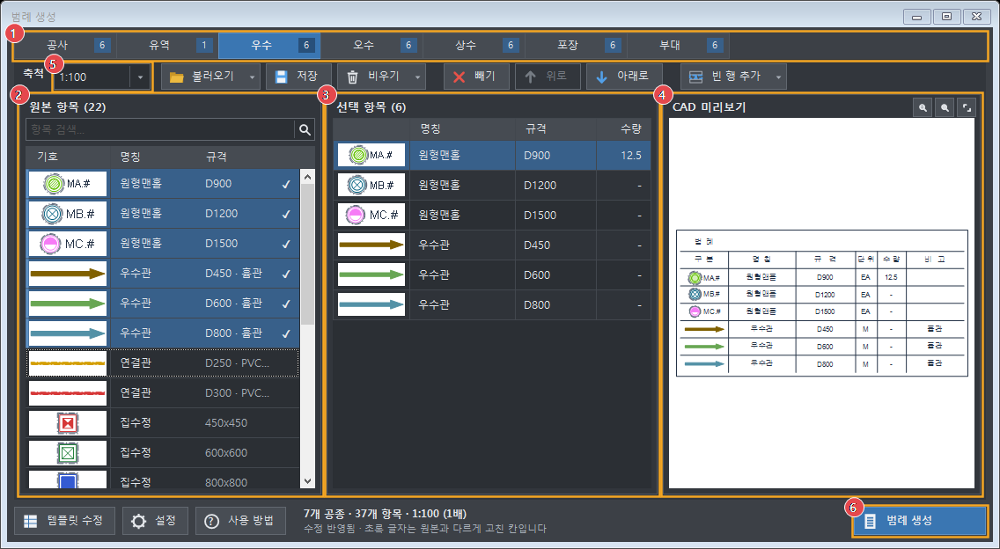
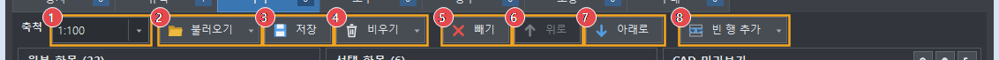
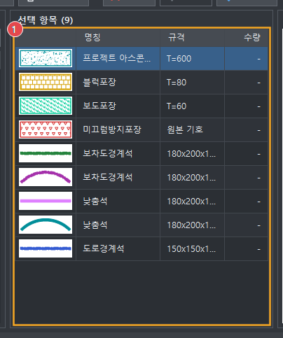
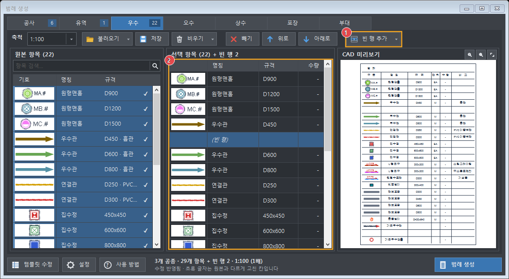
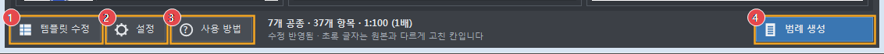
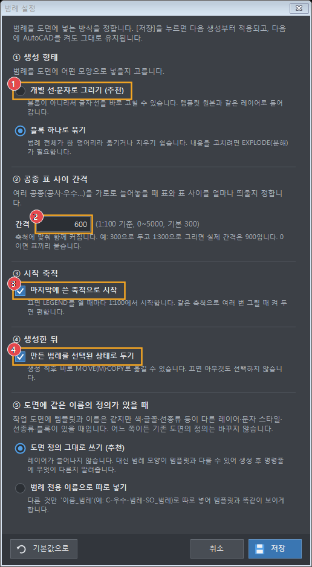

범례 생성
공사·유역·우수·오수·상수·포장·부대 범례표에서 필요한 항목만 골라 도면에 한 번에 그립니다. 기호·레이어·글꼴은 범례 템플릿 원본을 그대로 씁니다.
처음 사용하기
- AutoCAD를 닫고, 받은
Ahjooeng_v1.0_설치.zip의 압축을 풉니다. - 풀린 폴더의 설치.bat을 두 번 클릭합니다. "설치 완료!"가 나오면 Enter를 누릅니다.
- AutoCAD를 켜면 메뉴 막대에 Ahjooeng 메뉴가 생깁니다. Ahjooeng ▸ 범례 생성 (LGD)을 누르거나, 명령줄에 LGD(또는 LEGEND)를 입력합니다.
APPLOAD → 시작하기 세트에 StormLegend.dll을 넣어 두었다면 빼 주세요(두 번 불러오게 됩니다).화면 구성

- 1공종 탭 — 공사·우수 등 표를 고릅니다. 숫자는 고른 항목 수입니다.
- 2원본 항목 — 템플릿에 있는 항목입니다. 클릭하면 넣고, 다시 누르면 뺍니다.
- 3선택 항목 — 도면에 그려질 행입니다. 이 순서대로 그려집니다.
- 4CAD 미리보기 — 그려질 모양을 미리 봅니다(참고용).
- 5축척 — 1:100이 기본 크기, 1:300이면 3배로 그립니다.
- 6범례 생성 — 누른 뒤 도면에서 위치를 클릭합니다.
4단계로 범례 만들기
- 공종 고르기 — 위쪽 탭에서 우수 등을 누릅니다.
- 항목 넣기 — 왼쪽 원본 항목에서 필요한 줄을 클릭합니다. ✓ 표시가 붙고 가운데 표에 들어갑니다. 다른 공종도 같은 방법으로 고릅니다.
- 축척 확인 — 도구 막대 축척을 도면 축척에 맞춥니다(목록에서 고르거나
1:300,300처럼 입력). - 생성 — 범례 생성 → 창이 닫히면 도면에서 범례의 왼쪽 위가 될 곳을 클릭합니다. 만든 범례는 선택된 상태라 바로 M(MOVE)로 옮길 수 있습니다.
도구 막대

| 번호 | 버튼 | 하는 일 |
|---|---|---|
| 1 | 축척 | 도면 축척. ▾를 눌러 목록에서 고르거나 직접 입력합니다. |
| 2 | 불러오기 ▾ | 저장해 둔 구성이나 전체 항목을 불러와 한 번에 채웁니다. ★가 붙은 것이 시작할 때 쓰는 구성입니다. |
| 3 | 저장 | 지금 고른 항목·고친 명칭·수량·빈 행·순서를 이름 붙여 저장합니다. 다음에 열면 이 구성으로 시작합니다. |
| 4 | 비우기 ▾ | 이 공종만 또는 모든 공종의 선택을 비웁니다. |
| 5 | 빼기 | 가운데 표에서 고른 행을 뺍니다(Delete). |
| 67 | 위로 · 아래로 | 고른 행의 순서를 바꿉니다. 범례도 이 순서로 그려집니다. 맨 위·맨 아래에서는 흐리게 보입니다. |
| 8 | 빈 행 추가 ▾ | 공종 없이 빈 칸만 있는 행을 넣습니다. 빈 행 넣기 참고. |
명칭·규격·수량 고치기

- 가운데 표에서 명칭·규격·수량 칸을 클릭합니다.
- 내용을 입력하고 Enter를 누릅니다. 미리보기에 바로 반영됩니다.
- 원래대로 돌리려면 행에서 마우스 오른쪽 버튼 → 원래 이름으로를 누릅니다(수량은 그대로).
- 또는 0 이상 숫자(정수 8자리, 소수 3자리)만 됩니다. 틀리면 창 아래에 빨간 글자로 이유가 나오고, 고칠 때까지 다른 공종으로 넘어가지 않습니다.빈 행 넣기

- 1빈 행 추가 ▾ → 고른 행 바로 아래(표 중간) 또는 맨 아래
- 2빈 행은 (빈 행)으로 보이고, 도면에는 글자·기호 없이 칸만 그려집니다. 위로·아래로로 옮길 수 있습니다.
아래 버튼

- 1템플릿 수정 — 범례 템플릿 DWG를 엽니다(항목 추가).
- 2설정 — 그리는 방식을 정합니다(설정).
- 3사용 방법 — 이 설명서를 엽니다.
- 4범례 생성 — 고른 내용으로 도면에 그립니다.
설정
범례 창 아래 설정 버튼(명령줄: LEGENDSETTINGS)

| 번호 | 설정 | 설명 | 처음 값 |
|---|---|---|---|
| 1 | 생성 형태 | 개별 선·문자: 글자·선을 바로 고칠 수 있습니다. 블록 하나로 묶기: 한 번에 옮기거나 지우기 쉽습니다(고치려면 EXPLODE). | 개별 선·문자 |
| 2 | 공종 표 사이 간격 | 여러 공종을 가로로 놓을 때 표 사이 간격(1:100 기준). 1:300이면 3배로 벌어집니다. | 300 |
| 3 | 마지막 축척으로 시작 | 켜면 다음에 열 때 마지막으로 쓴 축척으로 시작합니다. | 꺼짐 |
| 4 | 만든 범례 선택해 두기 | 켜면 생성 직후 바로 MOVE·COPY할 수 있습니다. | 켜짐 |
| ⑤ | 같은 이름의 정의가 있을 때 | 작업 도면에 템플릿과 이름은 같지만 색·글꼴 등이 다른 레이어·문자 스타일·선종류·블록이 있을 때. 도면 정의 그대로 쓰기: 레이어가 늘지 않고, 다른 점을 명령줄에 알려줍니다. 범례 전용 이름으로 따로 넣기: 다른 것만 이름_범례로 따로 넣어 템플릿과 똑같이 보입니다. 어느 쪽이든 기존 도면 정의는 바꾸지 않습니다. | 도면 정의 그대로 |
템플릿에 항목 추가
새 기호나 항목이 필요하면 템플릿 DWG에 한 줄을 추가하고 저장하면 됩니다. 프로그램을 다시 설치할 필요가 없습니다.
- 템플릿 수정(또는 LEGENDTEMPLATE)을 누르면
범례템플릿.dwg가 열립니다. - 넣을 공종 표의 맨 아래 행을 COPY로 450 아래에 복사합니다.
- 복사한 행의 기호와 글자(명칭·규격·단위)를 고칩니다. 수량은
-로 둡니다. - Ctrl+S로 저장하고, 작업 도면으로 돌아가 LGD를 실행합니다. 명령줄에
포장 9→10처럼 반영 결과가 나옵니다.
C-공종-범례…)은 바꾸지 마세요. 테두리는 늘리지 않아도 생성할 때 자동으로 맞춥니다.명령어 목록
| 명령 | 하는 일 |
|---|---|
| LGD / LEGEND | 범례 생성 창 열기 |
| LEGENDALL | 공종 번호와 축척을 입력해 한 공종 전체 넣기 |
| LEGENDORIGINAL | 원본 표를 병합 칸·빈 행까지 그대로 복사 |
| LEGENDTEMPLATE | 범례 템플릿 DWG 열기 |
| LEGENDSETTINGS | 범례 설정 |
| LEGENDHELP | 이 설명서 열기 |
| AHJOOENGHELP | Ahjooeng 도움말(명령 목록) 열기 — 메뉴 [도움말] |
| AHJOOENGINFO | 프로그램 정보(버전·설치 위치·템플릿 상태) |
| AHJOOENGMENU | 메뉴 막대의 Ahjooeng 메뉴 다시 만들기 |
| AHJOOENGDIA | FILEDIA·CMDDIA가 0이면 1로 되돌리기(파일 선택창 복구) |
문제 해결
메뉴 막대에 Ahjooeng이 없어요
MENUBAR → 1로 메뉴 막대를 켜고, 그래도 없으면 AHJOOENGMENU를 입력합니다.
템플릿에 추가한 항목이 안 보여요
템플릿을 저장했는지 확인하세요. 명령줄의 템플릿 주의: 문구에 이유가 나옵니다(예: 명칭 칸이 비어 있음).
NETLOAD 때 파일 선택 창 대신 명령줄로 물어요
FILEDIA·CMDDIA가 0인 경우입니다. 다른 자동화 도구가 일부러 0으로 둘 수도 있어 이 프로그램은 값을 바꾸지 않고, AutoCAD를 켤 때 명령줄에 알려만 줍니다. 파일 선택창을 다시 쓰려면 명령줄에 AHJOOENGDIA를 입력하세요.
"템플릿을 읽지 못해 … 마지막 정상 분석본으로 엽니다"가 나와요
고친 템플릿 DWG를 읽을 수 없는 상태입니다(저장 중이었거나 표가 손상됨). 이 템플릿이 마지막으로 정상이던 때의 내용으로 열었으니 새로 고친 항목은 빠져 있습니다. 템플릿을 다시 열어 저장한 뒤 LGD를 다시 실행하세요. AHJOOENGINFO에서 지금 쓰는 템플릿이 배포본·수정본·복구본 중 무엇인지 볼 수 있습니다.
"프리셋 다시 선택 필요" 창이 떠요
템플릿이 바뀌어 저장해 둔 프리셋의 일부 항목이 어느 항목인지 확실하지 않은 경우입니다(예: 명칭·규격이 같은 U형측구가 두 개). 엉뚱한 기호에 수량이 붙지 않도록 그 항목만 빼고 열었습니다. 다시 골라 [저장]하세요.
생성한 범례 글자가 다른 모양으로 보여요
템플릿에 쓰인 글꼴(SHX 등)이 이 PC에 없으면 다른 글꼴로 보입니다. 같은 글꼴 파일을 설치하세요.